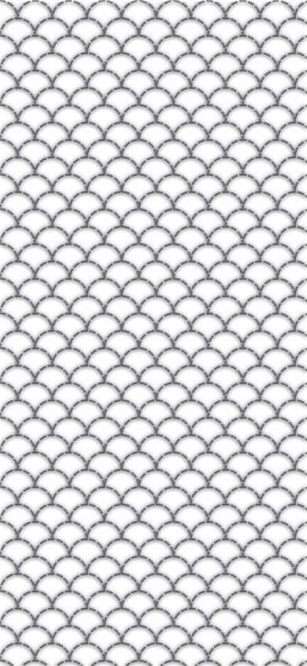
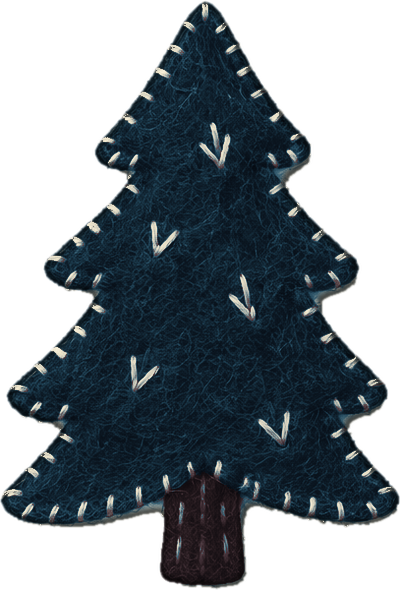
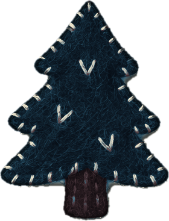
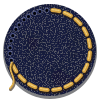

Body Double
Village
HXQR
Which one is really
Maya
?

14
sec
Your pick
A
i will reorganize your spice rack while you shower and call it love
B
overthinking a text for 40 minutes then just sending 'k' 💀
You can change your pick
until time runs out.

 Body Double
Village HXQR
Body Double
Village HXQR